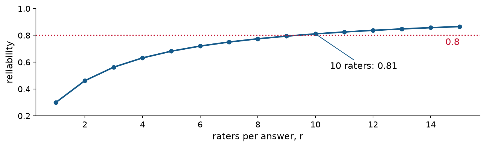
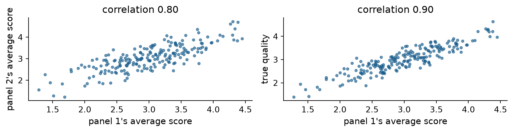

Agreement beyond chance, the reliability of several judges, and the order of the answers
Two city staff members read the same 100 chatbot answers.
Each marked every answer helpful or not helpful.
| Weeks | The question | What we choose |
|---|---|---|
| 4 and 5 | How precise is a score? Which model is better? | nothing; the key was given |
| 9 and 10 | Does the score carry over to the client? | nothing; the cases were given |
| 11 | How should the evaluation be run? | questions, answers, randomization |
| 12 | Can we trust the judge that grades the answers? | which judges, how many, which order |
Thursday’s lab: Questions 1 and 3 on MT-Bench, with experts and GPT-4.
| B: helpful | B: not helpful | Total | |
|---|---|---|---|
| A: helpful | 54 | 6 | 60 |
| A: not helpful | 16 | 24 | 40 |
| Total | 70 | 30 | 100 |
P(\text{agree})=P(\text{both helpful})+P(\text{both not helpful})
\begin{aligned} P(\text{agree by chance})&=P(\text{both helpful})+P(\text{both not helpful})\\ &=\textcolor{#8f1025}{P(\text{A helpful})\,P(\text{B helpful})}+\textcolor{#8f1025}{P(\text{A not})\,P(\text{B not})}\\ &=0.60\times0.70+0.40\times0.30\\ &=0.42+0.12\\ &=0.54 \end{aligned}
| B: helpful | B: not helpful | Total | |
|---|---|---|---|
| A: helpful | 54 (42) | 6 (18) | 60 |
| A: not helpful | 16 (28) | 24 (12) | 40 |
| Total | 70 | 30 | 100 |
\kappa=\frac{\text{agreement}-\text{chance agreement}}{1-\text{chance agreement}}=\frac{0.78-0.54}{1-0.54}=\frac{0.24}{0.46}=0.52
Cohen (1960), “A coefficient of agreement for nominal scales.”
Staff flag 10 of 200 answers as unsafe. A judge calls every answer safe.
| Judge: safe | Judge: unsafe | Total | |
|---|---|---|---|
| Staff: safe | 190 | 0 | 190 |
| Staff: unsafe | 10 | 0 | 10 |
| Total | 200 | 0 | 200 |
\begin{aligned} \text{agreement}&=190/200=0.95\\ \text{chance}&=P(\text{staff safe})\,P(\text{judge safe})\\ &\quad+P(\text{staff unsafe})\,P(\text{judge unsafe})\\ &=0.95\times1+0.05\times0=0.95\\ \kappa&=(0.95-0.95)/(1-0.95)=0 \end{aligned}
Feinstein and Cicchetti (1990), “High agreement but low kappa.”
Two graders read 50 answers: both yes on 35, only A on 5, only B on 2, both no on 8.
| Chatbot answers to 120 residents’ questions | \kappa |
|---|---|
| Staff member with staff member | 0.52 |
| LLM judge with a staff member | 0.48 |
| Difference, judge minus staff (95% interval) | -0.04 (-0.13 to 0.05) |
| \kappa | The two raters’ grades |
|---|---|
| 1 | always the same |
| between 0 and 1 | the same more often than chance |
| 0 | independent: one grade says nothing about the other |
| below 0 | the same less often than chance |
The chatbot writes the answers. Now staff score each answer on a scale, such as 1 to 5.
\operatorname{Var}(\mu_i)=\tau^2,\qquad y_{i1},\dots,y_{ir}\mid\mu_i\ \text{independent, mean}\ \mu_i,\ \text{variance}\ \sigma^2
\operatorname{Cov}(y_{i1},y_{i2})=\operatorname{Var}(\mu_i)=\tau^2,\qquad \rho=\frac{\tau^2}{\tau^2+\sigma^2}

\text{reliability}=\frac{\tau^2}{\operatorname{Var}(\bar y_i)}=\frac{\tau^2}{\tau^2+\sigma^2/r}=\frac{r\rho}{1+(r-1)\rho}

Usual source for 0.7, 0.8, and 0.9: Nunnally (1978). See also Lance, Butts, and Michels (2006).
Could the city get 10 ratings cheaply by asking one LLM judge 10 times?
The city wants its chatbot’s average helpfulness, with $500 for grading.
| Week 11 | Today |
|---|---|
| a question | a chatbot answer |
| a sampled answer to that question | a rating of that answer |
\operatorname{Var}(\text{average helpfulness})=\frac{1}{n}\Bigl(\tau^2+\frac{\sigma^2}{r}\Bigr),\qquad \text{cost}=n\,(\$6+r\times\$1)
r^\ast=\sqrt{\frac{\sigma^2}{\tau^2}\times\frac{\text{cost of an answer}}{\text{cost of a rating}}}=\sqrt{\frac{0.7}{0.3}\times\frac{\$6}{\$1}}=3.7
| Ratings per answer, r | Answers $500 buys | SE of the average helpfulness |
|---|---|---|
| 1 | 71 | 0.119 |
| 2 | 62 | 0.102 |
| 4 | 50 | 0.098 |
| 10 | 31 | 0.109 |
The chatbot writes the answers, and raters score them.
The city could use those scores for two different jobs.
| What the city wants | For example | Raters per answer |
|---|---|---|
| a trustworthy score for each single chatbot answer | flag one bad chatbot answer for staff to fix | 10, for a reliability of 0.81 |
| the chatbot’s average helpfulness over many residents’ questions | decide whether the chatbot is helpful enough to launch | about 4, with the rest of the $500 spent on more answers |
Two raters’ scores of the same answer correlate 0.5, so \rho=0.5.
The city is choosing between two versions of its chatbot, A and B.
| Design term | The city’s check |
|---|---|
| Unit | a resident’s question, with version A’s and version B’s answers |
| Treatment | the order, A first or B first |
| Block | the pair of answers, which gets both orders |
| Held constant | the prompt, the model version, temperature 0 |
| Response | which version the judge picks |
| Randomization | the order of the calls |
| 200 pairs | B shown first, judge picks A | B shown first, judge picks B |
|---|---|---|
| A shown first, judge picks A | 70 | 24 |
| A shown first, judge picks B | 10 | 96 |
\begin{aligned} P(\text{picks A}\mid\text{A first})&=(70+24)/200=0.47\\ P(\text{picks A}\mid\text{B first})&=(70+10)/200=0.40\\ \text{order effect}&=0.47-0.40=(24-10)/200=0.07 \end{aligned}
Zheng et al. (2023, Section 3.4) describe both designs.
In a crossover trial, each patient gets two treatments, one after the other.
| Crossover trial | LLM judge |
|---|---|
| two treatments | two answers |
| first period, second period | shown first, shown second |
| half get AB, half get BA | A first, B first |
| period effect | position bias |
Hills and Armitage (1979). Jones and Kenward (2015), Chapter 2. Sports models call it home-field advantage (Davidson and Beaver 1977).
Another judge compares two versions on 150 questions, in both orders. It picks A both times on 60, B both times on 63, the version it read first on 9, and the one it read second on 18.
Zheng et al. (2023, Section 3.3) name position, verbosity, and self-enhancement biases.
| Statistics | Machine learning |
|---|---|
| a rater | LLM-as-a-judge |
| agreement beyond chance with people | human agreement, alignment with humans |
| a period (order) effect | position bias |
| a shared preference for length | verbosity bias |
| a rater favoring its own model | self-enhancement bias |
| the average of several raters | a jury or panel of judges |
On chatbot answers to 120 residents’ questions, the LLM judge agreed with a staff member about as well as two staff members agreed with each other (\kappa 0.48 against 0.52; difference -0.04, 95% interval -0.13 to 0.05, resampling questions). Shown each pair in both orders, it changed its verdict on 17% of pairs, and it favored the answer it read first.